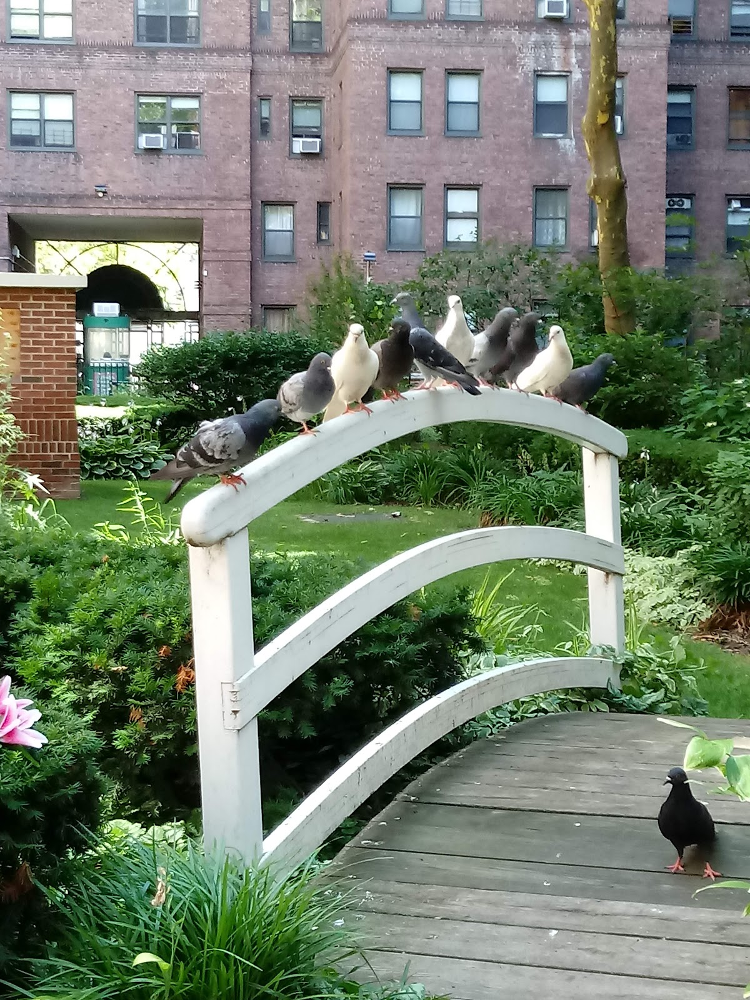
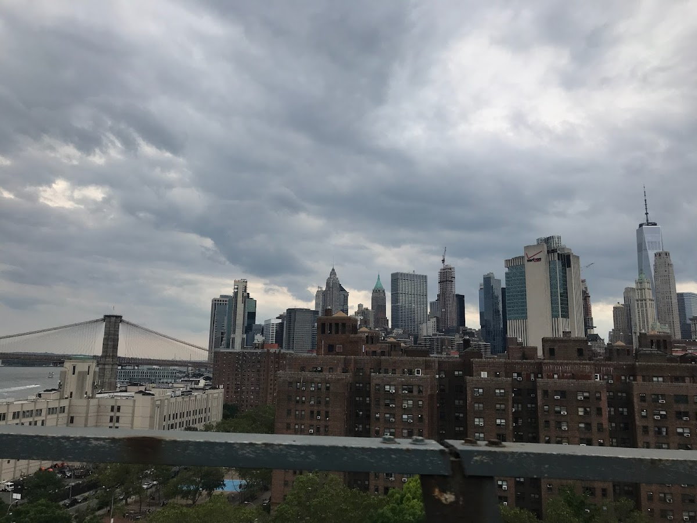
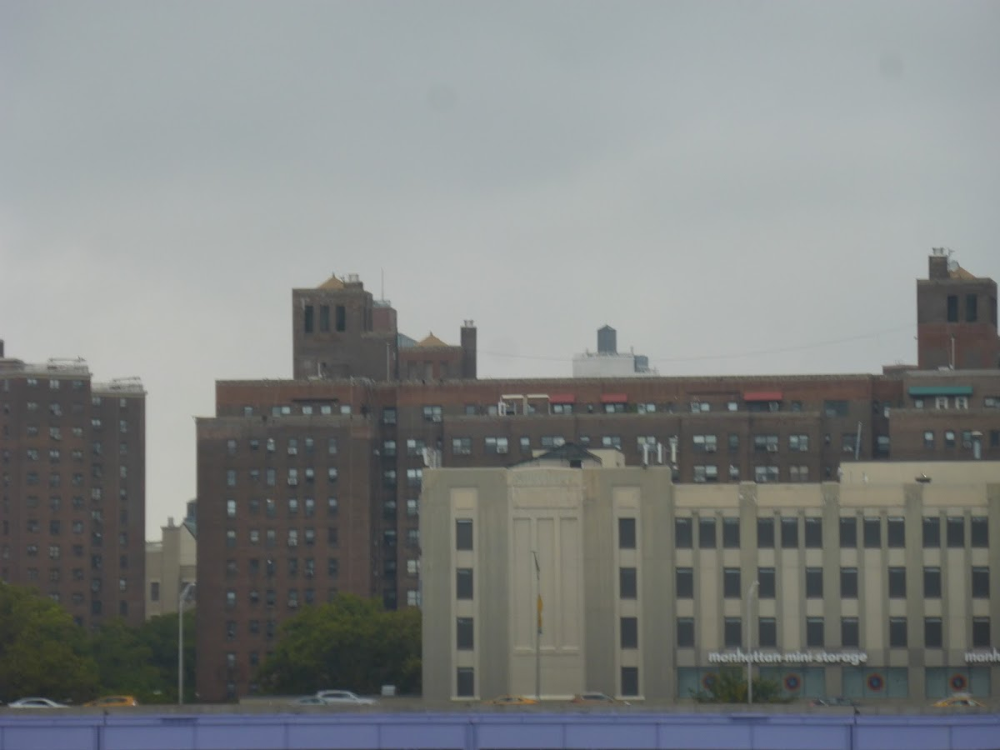
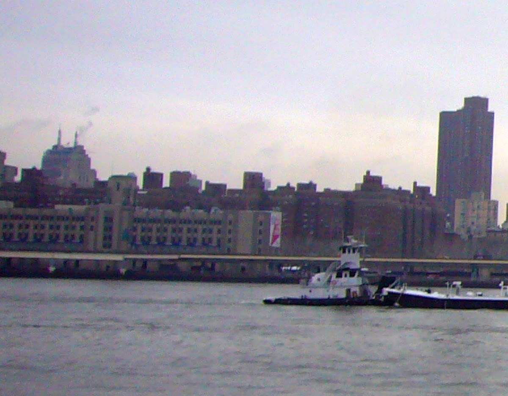

Shared spaces
Knickerbocker Village
A historic housing complex in Manhattan's Lower East Side, known for its early adoption of modern housing concepts.
Background
Knickerbocker Village was built in the 1930s as one of the first federally funded housing projects in the United States. It was designed to provide affordable housing for middle-income families and features a distinctive architectural style with interior courtyards.
Original AI-assisted background; not independently verified.
From the original map
They have a communal garden space in there!
Homes and shared residential spaces may be private. View from public streets unless entry is clearly permitted; map pins are reference points, not confirmed entrances.
Nearby places
Straight-line distances, not walking routes.
Discussion & corrections




40.71082, -73.99604 · Explore the surrounding area ↗